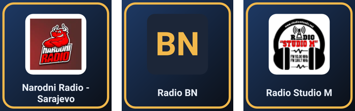
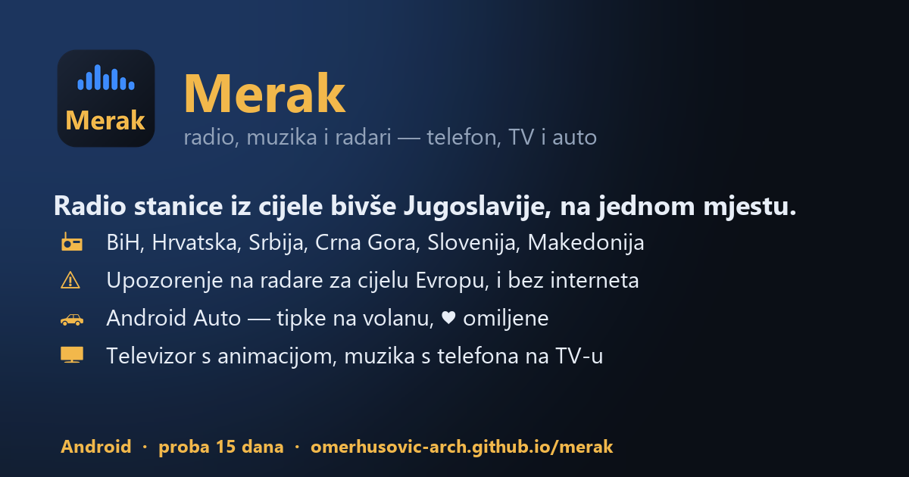
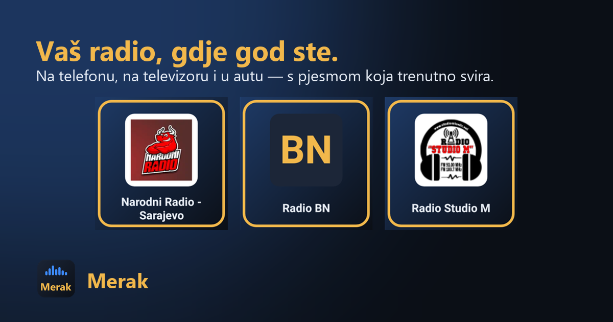

Šta Merak nudi
📻 Radio iz cijele bivše JugoslavijeBiH, Hrvatska, Srbija, Crna Gora, Slovenija, Makedonija, Kosovo — po državi i po žanru (narodna, pop, rock, zabavna…).
🎵 Pjesma koja sada sviraKod stanica koje to šalju, vidite izvođača i naziv pjesme.
📺 TelevizorRadi na Android / Google TV-u, s daljinskim. Prozor „Sada svira“ s animacijom.
🚗 Android AutoStanice u autu, tipke na volanu, ♥ za omiljene. Ne preskače stanicu u tunelu.
📱 Muzika s telefona na TV-uPustite muziku s telefona preko televizora, u istoj WiFi mreži.
⚠ Upozorenje na radareFiksni radari, kamere na semaforima i prosječna brzina za cijelu Evropu (OpenStreetMap). Glasom i u „Sada svira“, radi bez interneta i dok svira Spotify ili radio. Tamo gdje je zabranjeno, isključite.
⏾ Tajmer, omiljene, ujednačen zvukMuzika se sama ugasi, omiljene stanice su na jednom mjestu, sve stanice jednako glasne.



Proba i otključavanje
15 dana besplatno, sve funkcije
Poslije probe Merak se otključava ključem — jednom, bez pretplate.
Jedan ključ važi za telefon i jedan televizor. Bez ključa poslije probe na telefonu radi 10 radio stanica, a u autu i na TV-u Merak je zaključan.
- U Meraku otvorite ⚙ → Otključaj Merak i zapišite kod uređaja (npr. 7KQ2-M9XA).
- Za način uplate pogledajte kontakt u aplikaciji (⚙ → Otključaj Merak) i pošaljite kod uređaja.
- Nakon uplate dobit ćete ključ — upišite ga u Merak na telefonu.
- Na televizoru u Meraku izaberite „📱 Prenesi s telefona“ (telefon i TV na istom WiFi-ju).
Instalacija na telefon
- Na telefonu otvorite ovu stranicu i pritisnite „⬇ Preuzmi Merak“.
- Kad se preuzme, dodirnite fajl Merak.apk.
- Telefon pita da li smije instalirati aplikacije iz preglednika — dozvolite (samo prvi put).
- Pritisnite Instaliraj. Gotovo — Merak je među aplikacijama.
Telefon može upozoriti da je aplikacija „iz nepoznatog izvora“ — to je zato što Merak nije s Google Play-a. Nove verzije Merak sam ponudi.
Instalacija na televizor (Google TV / Android TV)
- Na TV-u u Google Play trgovini instalirajte besplatnu aplikaciju „Downloader“ (od AFTVnews).
- U postavkama TV-a dozvolite Downloaderu da instalira aplikacije (TV to sam ponudi pri prvoj instalaciji).
- Otvorite Downloader i daljinskim upišite adresu:
omerhusovic-arch.github.io/merak - Na stranici koja se otvori kliknite „⬇ Preuzmi Merak“, pa Instaliraj.
Uključivanje u autu (Android Auto)
Android Auto prikazuje samo aplikacije s Google Play-a, osim ako se jednom uključi „Nepoznati izvori“:
- Na telefonu: Postavke → Povezani uređaji (ili Aplikacije) → Android Auto.
- Na dnu 10 puta dodirnite „Verzija“ i potvrdite — uključene su postavke za programere.
- Gore desno ⋮ → Postavke za programere → uključite „Nepoznati izvori“.
- Ponovo spojite telefon s autom — Merak je među aplikacijama za muziku.